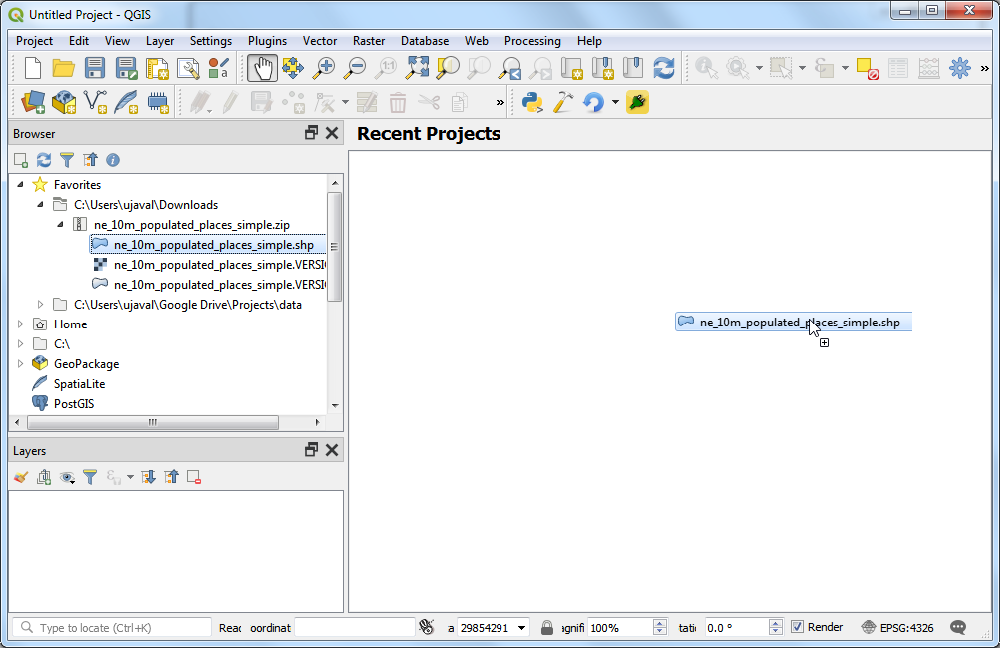
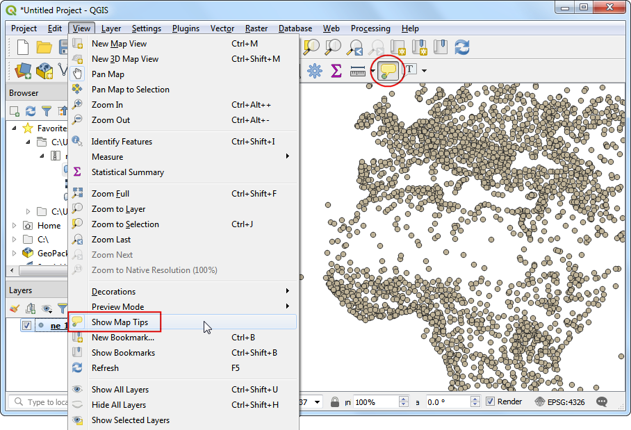

Aangepaste Python expressie-functies gebruiken (QGIS3)¶
Expressies in QGIS zijn bijzonder krachtig en worden in vele bron-mogelijkheden gebruikt: selectie, berekenen van veldwaarden, opmaken, labelen etc. QGIS hefet ook ondersteuning voor gebruikergedefinieerde expressies. Met slechts weinig programmeren in Python kunt u uw eigen functies definiëren die kunnen worden gebruikt binnen het programma voor de expressie.
Overzicht van de taak¶
We zullen een aangepaste functie definiëren die het UTM zonenummer van een kaartobject zoekt en deze functie gebruikt om een expressie te schrijven die de UTM-zone als een kaarttip weergeeft als over het punt wordt gegaan.
Andere vaardigheden die u zult leren¶
Hoe het gereedschap
Kaarttipste gebruiken om aangepaste tekst weer te geven indien er over een object wordt gegaan.
De gegevens ophalen¶
We zullen de gegevensset Natural Earth’s Populated Places gebruiken. Download de simple (less columns) dataset
Procedure¶
Zoek in de QGIS Browser naar het bestand
ne_10m_populated_places_simple.zipen vergroot het. Selecteer het bestandne_10m_populated_places_simple.shpen sleep het naar het kaartvenster.

Ga naar of klik op de knop Objecten selecteren met een expressie op de werkbalk Attributen.

Schakel, in het dialoogvenster Select by Expression, naar de tab Functiebewerker. Hier kunt u alle code voor PyQGIS schrijven die zal worden uitgevoerd door het programma voor expressies.

We zullen een aangepaste functie maken, genaamd
GetUtmZonedat het getal van de UTM-zone zal berekenen voor elk object. Omdat aangepaste functies in QGIS werken op het niveau van objecten. We zullen het zwaartepunt van de geometrie van het object gebruiken en de UTM-zone berekenen uit de latitude en longitude van de geometrie van het zwaartepunt. We zullen ook een bestemming ‘N’ of ‘S’ toevoegen aan de zone om aan te geven of de zone zich bevindt in de noordelijke of zuidelijke hemisfeer. Druk op de knop + in de linker benedenhoek van het scherm en typutm_zones.pyals de bestandsnaam. U kunt op het label Help in het onderste paneel klikken om het te sluiten en het paneel voor de code te vergroten.

UTM-zones zijn projectiezones op de lengtegraad, genummerd van 1 tot en met 60. Elke UTM-zone is 6 graden breed. Hier gebruiken we een eenvoudige wiskundige formule om de toepasselijke zone te zoeken voor een bepaalde waarde voor de lengtegraad. Deze formule werkt voor alles, met uitzondering van enkele speciale UTM-zones. Typ de volgende code in het venster van de bewerker. Klik, als u klaar bent, op Functies voor laden en opslaan.
import math from qgis.core import * from qgis.gui import * @qgsfunction(args=0, group='Custom', usesgeometry=True) def GetUtmZone(value1, feature, parent): """Return the UTM Zone of the feature's geometry as a String""" centroid = feature.geometry() longitude = centroid.asPoint().x() latitude = centroid.asPoint().y() zone_number = math.floor(((longitude + 180) / 6) % 60) + 1 if latitude >= 0: zone_letter = 'N' else: zone_letter = 'S' return '%d%s' % (int(zone_number), zone_letter)

Notitie
Momenteel is er geen manier om een bestand voor een expressie uit de gebruikersinterface te verwijderen. Als u het bestand utm_zone.py wilt verwijderen, kunt u gaan naar en verwijder het bestand uit .
Schakel naar de tab Expressie in het dialoogvenster Select by expression. Zoek en vergroot de groep Custom in het gedeelte Functies. U zult een nieuwe aangepaste functie
$GetUtmZonein de lijst zien. We kunnen nu deze functie nu gebruiken in expressies, net als alle andere functies. Typ de volgende expressie in de bewerker. Deze expressie zal alle punten selecteren die in de UTM Zone40Nvallen. Klik op Selecteren. Klik op Zoom naar objecten en de kaart zal wijzigen, als u klikt op Objecten selecteren zou u de punten in UTM zone 33N hun kleur zijn veranderen naar geel.GetUtmZone() = '33N'

Notitie
Wegens een probleem werkte deze mogelijkheid niet in vroege versies van QGIS 3. Het is gerepareerd vanaf versie 3.4.5 en hoger.
Terug in het hoofdvenster van QGIS zou u enkele punten zien die geel zijn geaccentueerd. Dit zijn de punten die vallen in de UTM Zone die we hebben gespecificeerd in de expressie.

U zag hoe we een aangepaste functie om objecten met een expressie te selecteren hebben gedefinieerd en gebruikt. We zullen du dezelfde functie in een andere context gebruiken. Eén van de verborgen juwelen in QGIS is het gereedschap Kaarttips. Dit gereedschap geeft gebruiker-gedefinieerde tekst weer indien u over een object gaat. Klik met rechts op de laag
ne_10m_populated_places_simpleen selecteer Eigenschappen.
Schakel over naar de tab Tonen. Hier kunt u elke tekst invullen die zal worden weergegeven als u over de objecten van de laag gaat. Beter nog, u kunt veldwaarden van de laag gebruiken en ook expressies om veel betere nuttige berichten weer te geven. Klik op de knop Ɛ.

U zult opnieuw de bekende expressiebewerker zien. We zullen de functie
concatgebruiken om de waarde van het veldnamesamen te voegen met het resultaat van onze aangepaste functieGetUtmZone. Voer de volgende expressie in en klik op OK.concat("name",' | UTM Zone: ', GetUtmZone())

U zult de expressie zien ingevoerd als de waarde van de tekst in Tonen. Klik op Toevoegen om het toe te voegen aan het vak HTML en druk dan op OK.

Laten we, vóórdat we doorgaan, de objecten die werden geselecteerd in de vorige stap deselecteren. Ga naar of klik op de knop Objecten uit alle lagen deselecteren op de werkbalk Attributen.

Activeer het gereedschap
Kaarttipsdoor te gaan naar of door te klikken op de knop Kaarttips weergeven op de werkbalk Attributen.Zoom in op een willekeurig gebied van de kaart en plaats uw muiscursor boven een object. U zult de naam van de stad en de corresponderende UTM-zone weergegeven zien worden als een kaarttip.

If you want to give feedback or share your experience with this tutorial, please comment below. (requires GitHub account)